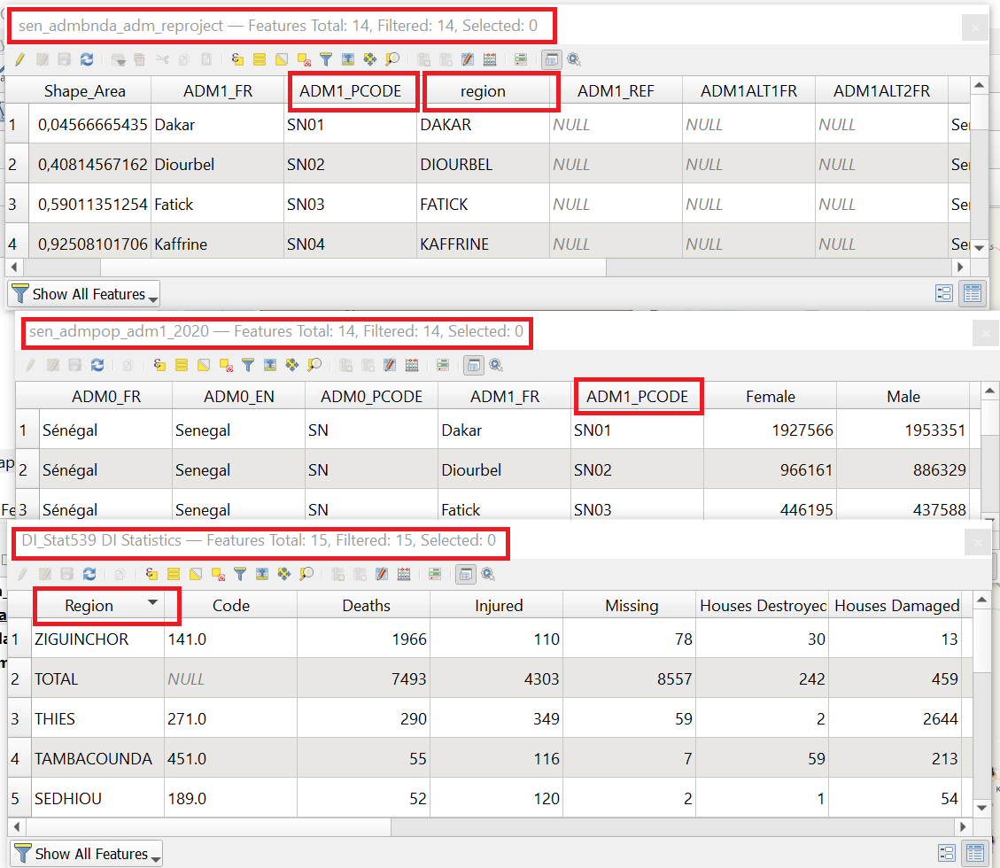
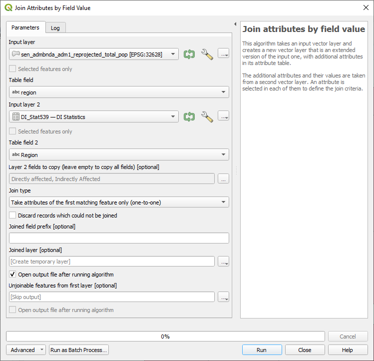
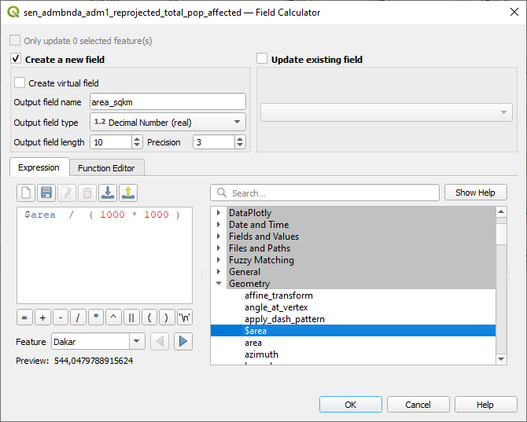
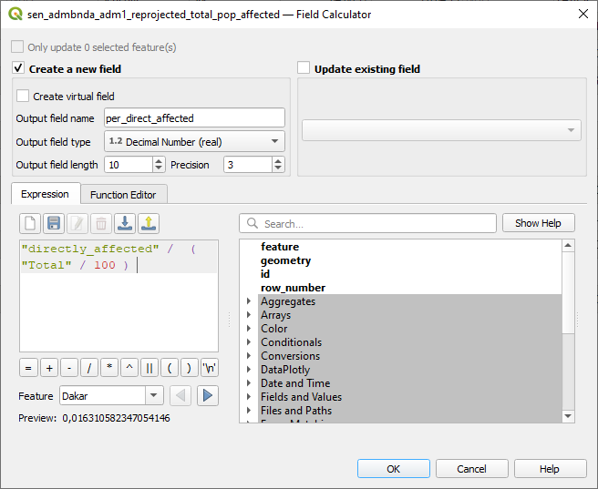

Exercise 2: Disaster impact in different regions of Senegal#
Characteristics of the exercise#
Aim of the exercise
Become familiar with different types of non-spatial analysis and geoprocessing tools. Understand the process of discovering relationships and connections between features in spatial data.
Type of trainings exercise:
This exercise can be used in online and presence training.
It can be done as a follow-along exercise or individually as a self-study.
Focus group (GIS-Knowledge Level)
These skills are relevant for
Estimated time demand for the exercise.
Relevant Wiki Articles
Instructions for the trainers#
Trainers Corner
Prepare the training
Take the time to familiarise yourself with the exercise and the provided material.
Prepare a white-board. It can be either a physical whiteboard, a flip-chart, or a digital whiteboard (e.g. Miro board) where the participants can add their findings and questions.
Before starting the exercise, make sure everybody has installed QGIS and has downloaded and unzipped the data folder.
Check out How to do trainings? for some general tips on training conduction
Conduct the training
Introduction:
Introduce the idea and aim of the exercise.
Provide the download link and make sure everybody has unzipped the folder before beginning the tasks.
Follow-along:
Show and explain each step yourself at least twice and slow enough so everybody can see what you are doing, and follow along in their own QGIS-project.
Make sure that everybody is following along and doing the steps themselves by periodically asking if anybody needs help or if everybody is still following.
Be open and patient to every question or problem that might come up. Your participants are essentially multitasking by paying attention to your instructions and orienting themselves in their own QGIS-project.
Wrap up:
Leave time for any issues or questions concerning the tasks at the end of the exercise.
Leave some time for open questions.
Availbale Data#
Download all datasets here and save the folder on your computer and unzip the file.
sen_admbnda_adm1_1m_gov_ocha_20190426.shp: Senegal boundary data (Admin level 1)DI_Stat924.xls: Senegal Desinventar Sendai data showing effects of disasters in Senegalese regionssen_admpop_adm1_2020.csv: Senegal administrative level 1 (région) 2019 projection population statistics
Hint
All files still have their original names. However, feel free to modify their names if necessary to identify them more easily.
Task#
Create an overview of the effects of disasters in different regions of Senegal. Use non-spatial joins, table functions and different symbology.
Hint
The projected coordinate system for Senegal is EPSG:32628 WGS 84 / UTM zone 28N
Load the Senegal administrative boundary layer (
sen_admbnda_adm1_1m_gov_ocha_20190426.shp), as well as population per subnational unit (sen_admpop_adm1_2020.csv) and the Desinventar Sendai data of Senegal (DI_Stat924.xls) into QGIS.Make sure to reproject the dataset with the administrative boundaries into UTM zone 28N. See the Wiki entry on Projections for further information.
Conduct non-spatial joins based on regions listed in two datasets and the PCODE listed in these same sets. See the Wiki entry on Non-spatial joins for further information.
{kind=link}

Screenshot of the different attribute tables with the corresponding columns highlighted#
First, add the total population of each administrative area to the shapefiles. Select the correct column that should be added (Hint: search for the column named
Total).Then, add the number of directly and indirectly affected people. Also select the correct columns that should be added (Hint: search for the column names
Directly affectedandIndirectly Affected).

Screenshot of the tool Join Attributes by Field Value for the total population#
{kind=link}

Screenshot of the tool Join Attributes by Field Value for the directly and indirectly affected people#
Use the table functions to calculate the area of each region in square kilometres and the density of the population. See the Wiki entry on Table functions for further information.
Create a new column/field named
"area_sqkm"using the field calculator. Ensure decimal numbers are used as the field type. For the calculation use the expression:$area / (1000 * 1000)Create another column/field named
"pop_per_sqkm"with decimal numbers as field type. Use the expression:"Total" / "area_sqkm"for the calculation.
You can access the field calculator through your attribute table by activating 
Toggle editing mode and clicking on this symbol  to
to Open field calculator.
{kind=link}

Screenshot of the area calculation using the field calculator#

Screenshot of the population per square km calculation using the field calculator#
Now, we need to rename the
Indirectly AffectedandDirectly Affectedcolumns so they don’t contain spaces. This ensures that the field calculator works properly. For this task we will use the toolRename field.

Screenshot of the Rename field tool#
Let us now determine the proportion of the population directly or indirectly affected in relation to the total population per region.
Use the field calculator. Use the expression:
"Indirectly Affected" / ("Total"/100)Use the field calculator. Use the expression:
"Directly Affected" / ("Total"/100)

Calculation of the proportion of the indirectly affected population relative to the total population within each region.#
{kind=link}

Calculation of the proportion of the directly affected population relative to the total population within each region.#
Select a colour scheme using the
Symbologyto visualise the share of people directly affected in the different regions (Hint:Categorized).Play around with different modes to find a useful colour/categorisation scheme for the visualisation.
Which regions are more and which are less directly affected? Are there any data gaps?
Export the map as a png (Hint:
Project, Import/Export, Export map to Image).Repeat the previous steps, but this time visualise the indirectly affected people in each region (Hint:
Categorized, columnIndirectly affected).What differences can be observed between the regions directly affected and those indirectly affected?